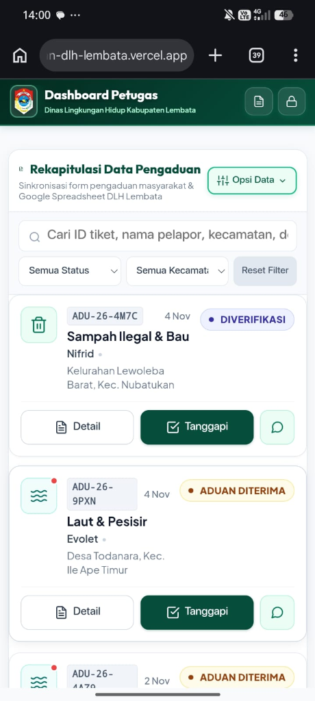

BUKU PANDUAN OPERASIONAL & STANDAR OPERASIONAL PROSEDUR (SOP)
EKOSISTEM DIGITAL ADUAN LINGKUNGAN (ECOADU LEMBATA)
Penguatan Tata Kelola Penanganan dan Verifikasi Terkait Dugaan Pencemaran Melalui Ekosistem Digital Aduan Lingkungan (ECOADU) pada Dinas Lingkungan Hidup Kabupaten Lembata.
1.1. Latar Belakang & Tujuan Transformasi Digital
Wilayah Kabupaten Lembata memiliki bentang alam kepulauan dengan garis pantai yang panjang serta topografi vulkanik yang dinamis. Pengelolaan dan pengawasan lingkungan hidup di Kabupaten Lembata menghadapi tantangan geografis yang nyata, di mana keterbatasan akses transportasi antar-kecamatan sering kali memperlambat penyampaian informasi pengaduan masyarakat. Sebelumnya, alur pelaporan pencemaran yang bersifat konvensional (melalui surat fisik, pesan berantai media sosial, atau penyampaian lisan) memiliki sejumlah kelemahan mendasar: lokasi titik pencemaran tidak presisi, ketiadaan bukti foto awal yang terotentikasi secara digital, tidak adanya rekam jejak tindak lanjut dinas yang transparan, serta risiko intimidasi terhadap identitas warga pelapor.
Hadirnya Ekosistem Digital Aduan Lingkungan (ECOADU) pada Dinas Lingkungan Hidup Kabupaten Lembata—khususnya pada Bidang Pengendalian Pencemaran dan Kerusakan Lingkungan Hidup (Tim Pengawas)—adalah wujud reformasi birokrasi dan modernisasi pelayanan publik berbasiskan Sistem Pemerintahan Berbasis Elektronik (SPBE). Aplikasi ini dirancang untuk mewujudkan penanganan aduan yang Cepat, Akurat, Berbasiskan Geospasial (Satelit GPS), dan Akuntabel.
Akses terbuka untuk warga Kabupaten Lembata:
- Formulir digital tanpa perlu registrasi akun berbelit
- Kunci lokasi satelit GPS presisi tinggi dari sensor perangkat HP
- Unggah bukti foto otomatis kompresi
- Lacak status tiket aduan secara transparan
Ruang kendali terproteksi PIN dinas:
- Command Center Split-Screen & Heatmap spasial
- Instrumen 5 checklist verifikasi pengawas LH
- Pembuat nomor Berita Acara otomatis
- Generator cetak BAST & BA Penolakan seketika
1.2. Kepatuhan Pelindungan Data Pribadi (UU PDP No. 27 Tahun 2022)
Salah satu faktor utama keengganan warga dalam melaporkan kejahatan atau pencemaran lingkungan adalah rasa takut akan retaliasi atau intimidasi dari pihak pelaku/usaha yang dilaporkan. Menjawab kekhawatiran tersebut, ECOADU LEMBATA menerapkan prinsip Privacy-by-Design yang patuh terhadap Undang-Undang Nomor 27 Tahun 2022 tentang Pelindungan Data Pribadi (UU PDP).
| Nama Pelapor | Fr*** K*** (Disamarkan) |
| Nomor WhatsApp | 0812****7890 (Disensor) |
| Alamat Domisili | Disembunyikan demi privasi |
| Nama Pelapor | Fransiskus Kedang |
| Nomor WhatsApp | 081234567890 WA Pelapor |
| Alamat Domisili | Kel. Selandoro, Nubatukan |
Setiap aduan yang masuk diproses melalui 5 tahapan status baku. Tim Pengawas diwajibkan memahami siklus status ini agar tertib administrasi, transparan kepada masyarakat, dan menjamin kepastian penegakan hukum lingkungan hidup di Kabupaten Lembata.
| Status Operasional & Badge | Definisi Operasional & Kondisi Faktual | Dokumen & Bukti Wajib | Kriteria Transisi Status |
|---|---|---|---|
|
⏱️ SLA: ≤ 24 Jam (Disposisi Awal)
|
Laporan baru terkirim dari warga lewat web atau WhatsApp, tervalidasi oleh sistem, dan mengantre telaah awal dokumen serta disposisi pimpinan. | ID Tiket Registrasi Resmi (ADU-26-XXXX) & Pesan WhatsApp tanda terima pelapor. |
Otomatis saat warga menekan tombol submit aduan di web portal. |
|
Diverifikasi ⏱️ SLA: ≤ 48 Jam (Inspeksi Fisik)
|
Proses pemeriksaan kebenaran laporan warga secara langsung di lapangan oleh Tim Pengawas DLH, validasi koordinat GPS/wilayah selesai, dan inspeksi bukti fisik. | Formulir Checklist 5 Indikator Faktual terisi & Foto geotagging pemeriksaan petugas. | Petugas membuka modal verifikasi, menginput nama pemeriksa, dan mencatat checklist fisik. |
|
Ditindaklanjuti ⏱️ SLA: 3 s.d. 14 Hari Kerja
|
Pencemaran terbukti benar secara fisik di lapangan dan DLH telah memulai tindakan penanganan teknis/lapangan langsung. | Catatan Tindak Lanjut DLH di sistem, SPPT/Teguran Tertulis I, atau Surat Pengantar Uji Lab. | Pemicu Mutlak: Checklist 5 indikator terpenuhi DAN aksi nyata (pembersihan sampah, uji sampel, mediasi, teguran) resmi dimulai. |
|
Selesai ⏱️ SLA: ≤ 24 Jam (Pasca-Tuntas)
|
Masalah lingkungan telah pulih tuntas, kewajiban perbaikan dipenuhi pihak terlapor, dan seluruh tahapan administratif selesai. | Berita Acara Pemeriksaan Fisik Lapangan & Penyelesaian (BAST) bernomor resmi, ttd pejabat, & foto pemulihan. | Penerbitan nomor BAST resmi dan pengunggahan berkas penutupan perkara ke database cloud. |
|
Ditolak ⏱️ SLA: ≤ 24 Jam (Pemberitahuan)
|
Aduan tidak dapat ditindaklanjuti karena materi tidak terbukti (fiktif/salah lokasi), bukan sengketa lingkungan (perdata/tanah), atau terlapor menolak diperiksa. | Catatan Justifikasi Penolakan Kedinasan ATAU Berita Acara Penolakan Pemeriksaan (UU 32/2009). | Hasil inspeksi menyatakan nihil pencemaran, atau pihak terlapor menolak pemeriksaan lapangan oleh Tim Pengawas. |
2. Titik Pemicu Perubahan Status (Trigger Point): Status WAJIB DIUBAH dari
Diverifikasi ke Ditindaklanjuti tepat pada saat kedua kriteria operasional berikut terpenuhi:
- Kriteria Faktual (Checklist): Minimal 3 dari 5 indikator checklist lapangan terpenuhi (terbukti ada titik koordinat valid, objek pencemaran nyata, dan sumber pencemar teridentifikasi).
- Kriteria Aksi Kedinasan: Salah satu langkah penanganan riil berikut resmi dieksekusi: (a) Mobilisasi armada pengangkut/truk sampah atau personil kebersihan DLH; (b) Pengambilan sampel air/tanah/udara untuk uji laboratorium terakreditasi; (c) Penerbitan surat teguran/peringatan tertulis pertama kepada pelaku pencemar; atau (d) Pengiriman undangan mediasi formal bersama Pemerintah Desa/Kelurahan.
• Setelah lokasi bersih, terbitkan BAST Standar A4 bertandatangan saksi.
• Status diubah ke Selesai & pesan WA terkirim otomatis ke warga.
• Ubah status ke Ditolak dengan justifikasi resmi yang santun.
• Alasan penolakan otomatis terkirim via WhatsApp ke pelapor secara transparan.
• Terbitkan BA Penolakan A4 ditandatangani bersama aparat desa.
• Beri peringatan sanksi pidana kurungan & denda Rp 1 Miliar.
3.1. Prosedur Login, Keamanan Sesi Kedinasan & Bantuan Pemulihan Sandi
Dashboard Petugas pada rute /petugas (atau berkas petugas.html) dirancang sebagai ruang kerja terenkripsi khusus untuk tim verifikator dan administrator Dinas Lingkungan Hidup Kabupaten Lembata. Fitur-fitur keamanan yang wajib dipahami antara lain:
- Otentikasi PIN / Sandi Kedinasan: Masukkan PIN resmi Tim Pengawas. Bidang isian dilengkapi sensor tombol Caps Lock aktif (⚠️ Peringatan Caps Lock) yang akan memunculkan spanduk peringatan merah jika tombol huruf kapital tidak sengaja menyala.
- Opsi Ingat Sesi Masuk: Tersedia kotak centang (). Jika dicentang pada laptop dinas resmi, token otentikasi disimpan di peramban sehingga petugas tidak perlu memasukkan sandi berulang kali saat menutup dan membuka tab baru.
- Tombol Kunci Layar: Tersedia tombol kedinasan di bilah navigasi kanan atas. Wajib ditekan oleh petugas saat meninggalkan komputer/gawai di meja kerja untuk mengunci layar seketika dan melindungi data pelapor dari pandangan publik.
- Bantuan Pemulihan Sandi: Untuk mencegah kebocoran data pengawasan, pemulihan akun dilakukan terpusat dengan menekan tombol . Tombol ini memunculkan modal dialog resmi yang memuat kontak WhatsApp Administrator ( +62 822-3458-2769), surel dinas ( dlh.kabupatenlembata@gmail.com), dan jam operasional dinas.
3.2. Memahami Kartu Indikator Kinerja (KPI) & Filter Cepat 4 Status
Di bagian atas dashboard tersaji 4 Kartu Indikator Kinerja Utama (KPI Cards) yang merefleksikan volume
pengaduan secara langsung:
• Total Aduan: 📊 18 Total Aduan — Akumulasi seluruh
pengaduan yang terdaftar di basis data dinas.
• Belum Verifikasi: ⏳ 3 Belum Verifikasi — Jumlah berkas
berstatus Baru yang membutuhkan disposisi tim verifikator lapangan.
• Dalam Proses: 🔄 5 Dalam Proses — Jumlah berkas berstatus
Ditindaklanjuti (sedang dalam penanganan teknis/pembersihan).
• Tuntas Selesai: ✅ 10 Tuntas Selesai — Jumlah berkas
berstatus Selesai yang telah memiliki Berita Acara dan kasusnya tuntas.
Fungsi Klik Interaktif: Mengetuk salah satu kartu KPI secara otomatis memfilter seluruh isi tabel
dan kartu aduan di bawahnya sesuai kategori kartu yang ditekan. Kartu yang aktif ditandai garis tepi hijau
tebal (*active-kpi ring*).
> 3.3. Mode Tampilan Adaptif: Command Center Desktop vs Gov-Card Mobile-First
Aplikasi memiliki dua mode tata letak adaptif yang fleksibel terhadap jenis layar:
• Mode Berdampingan (Split-Screen Command Center) di Laptop/PC: Diaktifkan melalui
tombol di bilah atas.
Layar terbelah menjadi dua kolom simultan: Peta Spasial di sebelah kiri dan Tabel Rekapitulasi di sebelah
kanan, memudahkan pimpinan DLH memantau sebaran kasus secara bersamaan.
• Tampilan Kartu Ringkas SPBE (Gov-Card) di Layar Ponsel: Ketika petugas bertugas di
lapangan menggunakan smartphone (≤ 768px), baris tabel secara otomatis bertransformasi menjadi
kartu ringkas ergonomis (*Gov-Card*) yang ramah sentuhan jempol (*thumb-friendly actions*). Pada bagian bawah kartu, tersaji 3 tombol tindakan cepat dengan tampilan visual yang tegas dan mudah dikenali:
1. Detail (Tombol Detail - Putih Abu): Membuka dialog komprehensif rincian 7 seksi data investigasi laporan (identitas utuh pelapor, koordinat GPS satelit, riwayat aduan ke aparat desa/polisi, dan galeri bukti foto).
2. Tanggapi (Tombol Tanggapi - Hijau Tua Kedinasan): Tombol eksekusi utama petugas lapangan untuk membuka formulir verifikasi fisik, mencentang 5 instrumen checklist pemeriksaan, mengambil foto riil kamera, dan menerbitkan Nomor Berita Acara resmi.
3. (Tombol WhatsApp Pelapor - Hijau Mint): Tombol pintas 1-klik untuk langsung membuka obrolan WhatsApp ke nomor pelapor guna mempermudah konfirmasi arah dan patokan lokasi saat tim sedang menuju ke tempat kejadian.
(Catatan: Selain ketiga tombol tersebut, mengetuk area badan kartu di bagian mana saja juga secara otomatis membuka modal rincian lengkap aduan).
| Bentuk Tombol Nyata | Ciri Visual & Warna | Fungsi Utama | Aksi Saat Diklik |
|---|---|---|---|
| Detail |
Putih & Abu-Abu Gelap Latar putih bersih, garis tepi abu-abu tipis, teks abu gelap tebal. |
Memeriksa seluruh riwayat investigasi dan kronologi lengkap tanpa mengubah status kasus. | Membuka dialog modal rincian 7 seksi audit (termasuk kontak pelapor dan harapan warga). |
| Tanggapi |
Hijau Tua Kedinasan (Deep Green) Latar hijau tua (#064e3b), teks putih tebal, ada bayangan elevasi halus. |
Eksekusi tindakan kedinasan: checklist fisik lapangan, foto bukti kamera, dan penomoran Berita Acara. | Membuka formulir verifikasi lapangan & otomatis memperbarui status ke database dinas. |
|
Hijau Mint Muda Kotak bujur sangkar (42x42px), latar hijau mint (#ecfdf5), garis tepi hijau emerald (#a7f3d0). |
Komunikasi langsung dengan pelapor tanpa perlu mencatat nomor telepon secara manual ke kontak HP. | Langsung membuka aplikasi WhatsApp di ponsel petugas ke nomor pelapor (format wa.me). |

3.4. Peta Spasial Sebaran Aduan, Heatmap Titik Rawan & Kontrol Geospasial
Peta terintegrasi pada modul pengawasan DLH menyediakan fungsi spasial lengkap:
-
3 Mode Visualisasi Lapisan:
1. : Menampilkan titik pin dengan warna status kasus. Mengklik marker akan membuka pop-up pratinjau tiket, nama pelapor, patokan lokasi, serta tombol pintas buka rincian.
2. : Peta panas berbasis intensitas kepadatan laporan, memvisualisasikan zona merah rawan pencemaran atau timbulan sampah ilegal berulang.
3. : Menampilkan pin penanda aktif di atas gradasi warna peta panas secara simultan. - Pilihan Peta Latar: Tersedia pemilih basemap . Petugas dapat memilih 4 jenis peta latar: Peta Jalan (OSM Standard), Peta Jalan & Kota (Esri Street), Citra Satelit Nyata (High-Resolution Satellite), dan Relief Topografi untuk kontur elevasi bukit/gunung.
- Fokus Peta Cepat: Tombol mengembalikan posisi dan tingkat zoom peta ke titik tengah Kabupaten Lembata (Lewoleba, Zoom 11) dalam sekali klik.
- Filter Khusus Peta & Counter Titik: Tersedia menu saring dan untuk menyaring marker yang tampil di peta, serta indikator status 📊 Menampilkan 18 Titik yang menghitung jumlah titik spasial aktif.
3.5. Toolbar Pencarian Real-Time, Multi-Filter & Paginasi Data
Untuk mempermudah penelusuran berkas di antara ratusan aduan warga, dashboard menyediakan instrumen filter
presisi:
• Kotak Pencarian Real-Time: Cari ID tiket, nama pelapor, kecamatan... — Melakukan
pencarian instan tanpa perlu menekan tombol Enter. Mesin pencari mencocokkan teks pada: ID Tiket (misal:
ADU-26-K8M4), nama warga, nomor WhatsApp, nama kecamatan, nama desa, jenis pencemaran, atau kata
kunci dalam kronologi masalah.
• Filter Kecamatan: — Menyaring daftar aduan khusus pada salah satu dari 9 kecamatan di Lembata.
• Filter Status Penanganan: — Menyaring
aduan berdasarkan 5 status (*Baru*, *Diverifikasi*, *Ditindaklanjuti*, *Selesai*, *Ditolak*).
• Tombol Reset Filter: —
Mengembalikan seluruh parameter filter pencarian dan dropdown ke kondisi awal untuk menampilkan seluruh
dataset.
• Paginasi Baris: — Mengatur
pembagian baris per halaman agar pemuatan data tetap ringan dan cepat.
3.6. Menu Aksi Baris / Tindakan Cepat Petugas Lapangan
Di setiap baris tabel pada komputer maupun pada lembar rincian modal aduan, tersedia serangkaian tombol tindakan cepat yang memiliki bentuk, ikon SVG, dan warna visual resmi yang seragam dengan aplikasi web:
3.7. Modal Rincian Lengkap Aduan Lingkungan Dialog Rincian 7 Seksi
Ketika tombol Rincian diklik, sistem menyajikan lembar audit investigasi menyeluruh yang tersusun
dalam 7 seksi data resmi:
1. Status Tiket & Nomor Register: Menampilkan status penanganan saat ini dan badge ID
tiket.
2. Identitas Lengkap Pelapor: Nama lengkap, nomor WhatsApp aktif, dan alamat domisili
warga tanpa sensor.
3. Waktu & Lokasi Faktual: Tanggal kejadian, kecamatan, desa, patokan spesifik, dan
koordinat satelit GPS.
4. Rincian Masalah: Kategori pencemaran, pihak terlapor, dan kronologi masalah yang
dilaporkan.
5. Harapan Penyelesaian (Bagian 5): Bentuk tindakan yang diharapkan pelapor (pembersihan,
penertiban, dsb).
6. Riwayat Instansi Lain (Bagian 6): Menampilkan daftar kantor desa, polsek, atau pihak
lain yang pernah dihubungi pelapor sebelumnya beserta tanggal pelaporannya.
7. Galeri Foto Bukti & Verifikasi Petugas: Menampilkan foto bukti warga dan foto riil
hasil inspeksi petugas.
Nama: Fransiskus Kedang
WA: 081234567890
Alamat: Kel. Selandoro, Nubatukan
Kec: Nubatukan • Desa: Lewoleba Tengah
Patokan: Tepi Pantai Jeti
GPS: -8.3615, 123.5512
Tim telah turun ke lokasi pantai jeti, mengambil sampel tumpahan solar kapal, dan menerbitkan Berita Acara register No: BA-05/ADU-26-K8M4/DLH-LMB/XI/2026.
3.8. Modal Lightbox Forensik Bukti Foto Dialog Zoom Lightbox
Untuk memeriksa bukti foto secara mendalam (misalnya membaca pelat nomor truk pembuang sampah ilegal, label bahaya limbah B3, atau lapisan minyak tipis di perairan), ECOADU dilengkapi Modal Lightbox Forensik Gambar Beresolusi Tinggi dengan rangkaian tombol kendali visual:
- Kontrol Zoom Presisi: Tersedia widget tombol zoom interaktif 150% untuk memperbesar foto bukti hingga 300% guna penyelidikan forensik lapangan.
- Interaksi Pan & Drag Bebas: Saat gambar diperbesar, petugas dapat menggeser posisi foto (*pan & drag*) menggunakan kursor mouse atau usapan layar sentuh (*pinch*) untuk meneliti sudut objek terkecil.
- Navigasi Multi-Foto: Tersedia kontrol bilah perpindahan foto 1 / 5 untuk menelusuri seluruh berkas foto bukti yang diunggah warga maupun dokumentasi tindak lanjut petugas.
- Buka di Tab Baru & Unduh Berkas: Tombol membuka foto dalam resolusi asli sensor kamera di jendela peramban terpisah, sedangkan tombol mengunduh berkas gambar autentik ke komputer dinas sebagai barang bukti fisik investigasi.
- Pintasan Papan Tombol (Keyboard Shortcuts): Petugas dapat menggunakan tombol panah keyboard (kiri/kanan) untuk berpindah foto dan tombol Escape (ESC) atau tombol untuk menutup jendela lightbox secara instan.
3.9. Modal Dialog Konfirmasi Hapus Data Aduan & Blacklist Log Dialog Konfirmasi Hapus
Dalam hal ditemukan laporan palsu (*spam*), laporan uji coba (*testing*), atau laporan duplikat ganda, petugas
verifikator berwenang menghapus data melalui modal konfirmasi berjenjang:
• Kartu Pratinjau Hapus Aduan:
⚠️ Pratinjau Aduan Yang Dihapus
Menampilkan ringkasan nomor register tiket, nama warga pelapor, lokasi kecamatan/desa, dan jenis pencemaran sebelum eksekusi dilakukan.
• Tombol Eksekusi Penghapusan: Tersedia tombol
dan tombol
yang memastikan tindakan dilakukan dengan kesadaran penuh.
• Mekanisme Blacklist Log: ID tiket yang telah dihapus secara otomatis dicatat ke
dalam *Blacklist Log* di peramban. Hal ini memastikan bahwa saat fitur sinkronisasi dengan Google Spreadsheet
dijalankan kembali, data yang telah dihapus tidak akan terunduh atau muncul kembali ke dalam dashboard.
3.10. Modal Pengaturan Database Google Spreadsheet / Cloud GAS Dialog Sinkronisasi Spreadsheet
Seluruh rekaman pengaduan ECOADU bermuara pada Google Spreadsheet resmi DLH Lembata yang dikendalikan melalui modal sinkronisasi cloud dengan tombol operasi nyata:
- Konfigurasi URL Google Apps Script: https://script.google.com/.../exec Bidang input untuk memasukkan tautan Webhook Web App eksekusi. Jika dikosongkan, aplikasi secara otomatis beralih ke mode mandiri (*Offline LocalStorage Mode*).
- Tombol Simpan URL: Menyimpan parameter tautan endpoint GAS ke penyimpanan konfigurasi browser dinas.
- Tombol Sinkronkan Sekarang: Memaksa sinkronisasi dua arah seketika untuk menarik seluruh baris aduan terbaru dari spreadsheet ke layar dashboard petugas.
- Tombol Unggah ke Sheets: Digunakan saat admin baru membuat lembar kerja spreadsheet baru yang masih kosong. Menekan tombol ini akan mengirimkan seluruh data aduan lokal saat ini ke Google Spreadsheet agar langsung terisi lengkap.
- Tombol Reset ke 0 Aduan: Fitur inisialisasi awal (*Fresh Start*) yang mengosongkan seluruh data simulasi/testing menjadi 0 laporan bersih sebelum aplikasi resmi dioperasikan ke masyarakat.
3.11. Sistem Notifikasi Toast & Auto-Sync Polling Real-Time Kontainer Notifikasi Toast
Dashboard dilengkapi Kontainer Notifikasi Toast Mengambang di sudut layar yang memberikan umpan balik visual instan sesuai status tindakan:
Verifikasi disimpan & sinkronisasi cloud berhasil.
Kolom wajib belum diisi / lampiran melebihi batas.
Koneksi terputus / server Apps Script sedang sibuk.
Selain itu, sistem menjalankan mekanisme Auto-Sync Polling di latar belakang secara hening. Petugas lapangan tidak perlu memuat ulang (*refresh*) halaman manual; ketika ada laporan aduan baru masuk dari portal warga, sistem akan memperbarui daftar tabel dan peta secara otomatis.
3.12. Sistem Peringatan Tugas Masuk (WhatsApp Early Warning Alert) untuk Tim Pengawas
Selain mengirimkan tanda terima kepada warga pelapor, sistem ECOADU LEMBATA dilengkapi mekanisme arsitektur Dual-Dispatch Gateway. Sesaat setelah formulir pengaduan berhasil dikirim dari portal warga, sistem secara otomatis meneruskan pesan peringatan siaga tugas baru (Early Warning Alert) langsung ke nomor WhatsApp siaga dinas WA Siaga Dinas: 0822-3458-2769. Hal ini memastikan Tim Pengawas dapat merespons dengan cepat meskipun sedang tidak membuka layar komputer dashboard:
• No. Tiket : ADU-26-K8M4
• Waktu : 04 Nov 2026, 10:14 WITA
• Pelapor : Fransiskus Kedang (081234567890)
• Wilayah : Lewoleba, Kec. Nubatukan
• Kategori : Laut & Pesisir
• Uraian : Tumpukan limbah dan sampah anorganik mengambang di pesisir dekat jeti perahu nelayan.
• Patokan : Tepi Pantai Jeti, belakang dermaga Lewoleba
https://aduan-dlh-lembata.vercel.app
Matriks Komparasi Notifikasi Otomatis Sistem: Sisi Pelapor vs Sisi Tim Pengawas
| Parameter | Sisi Pelapor (Warga) | Sisi Petugas (Tim Pengawas DLH) |
|---|---|---|
| Nomor Tujuan | Nomor ponsel warga dari input formulir | PETUGAS_WA_NUMBER (082234582769) |
| Header Pesan | *PENGADUAN DITERIMA - DLH LEMBATA* | *ADUAN BARU MASUK - DLH LEMBATA* |
| Informasi Kontak | Sapaan personal nama warga | Nama pelapor + Nomor WhatsApp pelapor untuk dihubungi langsung |
| Detail Lokasi | Kecamatan dan Desa | Wilayah administratif + Patokan detail fisik di lapangan |
| Tautan Akses | Link pelacakan mandiri (?tiket=ADU-26-XXXX) | Link portal utama dinas (https://aduan-dlh-lembata.vercel.app) |
4.1. Langkah Formulir Verifikasi & Instrumen 5 Checklist Pengawas LH
Ketika verifikator tiba di lokasi, buka formulir verifikasi dengan menekan tombol (pada antarmuka tabel desktop) atau tombol (pada antarmuka kartu gawai). Berikut adalah visualisasi instrumen 5 checklist standar:
Instrumen 5 checklist verifikasi faktual pada ECOADU berfungsi sebagai Quick-Assessment Gate (pintu kendali mutu administrasi pengawasan). Setiap butir memiliki bobot yuridis dan konsekuensi penanganan berbeda:
| No | Indikator Faktual | Kategori / Sifat | Standar Pembuktian Lapangan | Bila Tidak Terpenuhi |
|---|---|---|---|---|
| 1 | Titik koordinat GPS sesuai lokasi faktual | MUTLAK (Mandatory) | Kunci GPS gawai di lokasi riil (akurasi ≤50m). Berada dalam yurisdiksi Kab. Lembata. | Aduan Ditolak (Laporan Fiktif/Luar Wilayah) |
| 2 | Bukti visual / objek dugaan pencemaran | MUTLAK (Mandatory) | Ditemukan fisik sampah liar, air limbah abnormal, kebauan pekat, atau bukaan galian. | Aduan Ditolak (Tidak Ditemukan Pencemaran) |
| 3 | Sumber atau pelaku telah diperiksa | KONDISIONAL | Klarifikasi pemilik usaha/warga. Bila anonim/sampah pantai: catat 'Pelaku Publik/Anonim'. | Bila menolak: terbitkan BA Penolakan (Psl 115) |
| 4 | Dokumentasi fisik / sampel lapangan | MUTLAK (Minimal Foto) | Minimal 2 foto geotagged. Khusus limbah cair/B3: ambil sampel bersegel (Chain of Custody). | Tidak Sah secara Hukum Pembuktian |
| 5 | Koordinasi aparat desa/kelurahan terkait | REKOMENDASI KUAT | Kades, Lurah, RT/RW, atau Babinsa/Bhabinkamtibmas bertindak sebagai Saksi Netral Berita Acara. | Verifikasi tetap sah bila ada kendala mendesak |
Ditindaklanjuti dengan catatan penanganan dialihkan kepada aksi armada kebersihan DLH bersama masyarakat.
4.2. Templat Respons Cepat, Kamera Fisik Petugas & No. BA Otomatis
Untuk efisiensi pengawas di lapangan, sistem menyediakan 6 chips templat narasi cepat, integrasi pemotretan kamera HP, serta penomoran Berita Acara otomatis:
4.3. Notifikasi WhatsApp Pembaruan Status ke Sisi Pelapor (Fonnte API Gateway)
Transparansi penanganan aduan kepada masyarakat diwujudkan melalui pengiriman pesan WhatsApp otomatis ke nomor gawai pelapor setiap kali petugas verifikator menekan tombol di dashboard petugas. Pengiriman ini diproses secara instan di latar belakang (non-blocking) melalui modul gateway integrasi backend Google Apps Script.
Halo Fransiskus Kedang, terdapat pembaruan status atas pengaduan Anda:
• No. Tiket: ADU-26-K8M4
• Status Terbaru: Diverifikasi
• Waktu Pembaruan: 04 Nov 2026 14:30
• Petugas: Yohanes Kepitan Rau, S.T.
• Catatan Petugas: Tim Verifikasi DLH Lembata telah melakukan peninjauan fisik lapangan di pesisir pantai Lewoleba. Bukti visual sampah anorganik teridentifikasi dan telah dikoordinasikan penanganan pengangkutannya.
Pantau tindak lanjut laporan Anda:
https://aduan-dlh-lembata.vercel.app/?tiket=ADU-26-K8M4
_Terima kasih atas kepedulian Anda dalam menjaga kebersihan & kelestarian lingkungan hidup di Kabupaten Lembata._
Halo Fransiskus Kedang, terdapat pembaruan status atas pengaduan Anda:
• No. Tiket: ADU-26-K8M4
• Status Terbaru: Selesai
• Waktu Pembaruan: 04 Nov 2026 16:45
• Petugas: Yohanes Kepitan Rau, S.T.
• Catatan Petugas: Penanganan pembersihan dan pengangkutan sampah telah tuntas diselesaikan. Lokasi pesisir kembali bersih dan Berita Acara BA-05/ADU-26-K8M4/DLH-LMB/XI/2026 telah ditandatangani.
Pantau tindak lanjut laporan Anda:
https://aduan-dlh-lembata.vercel.app/?tiket=ADU-26-K8M4
_Terima kasih atas kepedulian Anda dalam menjaga kebersihan & kelestarian lingkungan hidup di Kabupaten Lembata._
Diterbitkan saat pemilik usaha/warga bersedia diperiksa. Memuat hasil uji 5 checklist, foto bersandingan warga-petugas, dan ditandatangani bersama Tim DLH.
Diterbitkan saat terlapor menolak Tim Pengawas. Berlandaskan Pasal 74 & 115 UU 32/2009 (ancaman pidana kurungan 1 thn / denda Rp 1 Miliar), disahkan bersama saksi Kepala Desa/Lurah.
5.1. Mencetak Berita Acara Verifikasi Lapangan (Format Baku A4)
Petugas dapat mencetak Berita Acara Pemeriksaan Fisik Lapangan (BAST) satu halaman format kertas A4 resmi dengan menekan tombol pada lembar rincian aduan atau tabel rekapitulasi data:
PEMERINTAH KABUPATEN LEMBATA
DINAS LINGKUNGAN HIDUP
Jalan Trans Atadei, Lewoleba, Kabupaten Lembata, Nusa Tenggara Timur
BERITA ACARA PEMERIKSAAN DAN VERIFIKASI PENGADUAN LINGKUNGAN HIDUP
Pada hari ini, Rabu, tanggal 04 November 2026, kami yang bertanda tangan di bawah ini, Tim Verifikasi Lapangan Dinas Lingkungan Hidup Kabupaten Lembata, telah melaksanakan pemeriksaan dan verifikasi lapangan atas pengaduan dugaan pencemaran lingkungan hidup dengan rincian sebagai berikut:
| 1. Nomor Registrasi Pengaduan | .................................................................................... |
|---|---|
| 2. Tanggal Pengaduan Diterima | ...... / .................. / 20...... (Pukul: ...... : ...... WITA) |
| 3. Nama Pelapor | .................................................................................... |
| 4. No. Telepon / WhatsApp | .................................................................................... |
| 5. Kecamatan • Desa/Kelurahan | Kec. ........................................ • Desa/Kel. ........................................ |
| 6. Lokasi Detail / Patokan | .................................................................................... |
| 7. Titik Koordinat GPS | Lat: ........................................ , Long: ........................................ |
| 8. Jenis Dugaan Pencemaran | [ ] Laut & Pesisir [ ] Sampah [ ] Air/Sungai [ ] Udara [ ] Limbah B3 [ ] Kerusakan LH |
| 9. Uraian Singkat Pengaduan | Telah dilakukan pembersihan timbulan sampah liar pesisir Lewoleba seluas ±40 m² bersama aparat kelurahan dan warga setempat. |
| 1. Nama Tim / Petugas | .................................................................................... |
|---|---|
| 2. Tanggal & Waktu Pemeriksaan | ...... / .................. / 20...... (Pukul: ...... : ...... WITA) |
| 3. Instansi / Bidang | Bidang Pengendalian Pencemaran dan Kerusakan LH – Dinas Lingkungan Hidup Kab. Lembata |
| 1. Checklist 5 Indikator Faktual |
Status: 5 / 5 Instrumen Terpenuhi (Terverifikasi Faktual Sesuai Bab IV) [ ✓ ] (1) Titik koordinat GPS sesuai dengan lokasi kejadian faktual • [ ✓ ] (2) Bukti visual/objek dugaan pencemaran teridentifikasi di lapangan [ ✓ ] (3) Sumber atau pelaku dugaan pencemaran telah diperiksa • [ ✓ ] (4) Pengambilan dokumentasi fisik/sampel lapangan telah dilakukan [ ✓ ] (5) Koordinasi bersama aparat desa/kelurahan atau pihak terkait |
|---|---|
| 2. Uraian Temuan Lapangan | Telah dilakukan pembersihan timbulan sampah liar pesisir Lewoleba seluas ±40 m² bersama aparat kelurahan dan warga setempat. |
| 3. Kesimpulan Status Aduan | [ ] TERBUKTI (DITINDAKLANJUTI) [ ] TIDAK TERBUKTI (DITOLAK) |
| 1. Tindakan / Rekomendasi DLH | Pemasangan papan larangan pembuangan sampah liar serta patroli berkala Satgas Pengawas Lingkungan Hidup DLH Lembata. |
|---|---|
| 2. Catatan Berita Acara (BAST) | Pemasangan papan larangan pembuangan sampah liar serta patroli berkala Satgas Pengawas Lingkungan Hidup DLH Lembata. |
Demikian Berita Acara Pemeriksaan dan Verifikasi Pengaduan Lingkungan Hidup ini dibuat berdasarkan hasil pemeriksaan faktual di lapangan untuk dapat dipergunakan sebagaimana mestinya.
> 5.2. Format Dokumen Berita Acara Penolakan Pemeriksaan (Pasal 74 & 115 UU 32/2009)
Apabila pemilik usaha menolak diperiksa, petugas memilih status "Ditolak" dan menekan tombol :
PEMERINTAH KABUPATEN LEMBATA
DINAS LINGKUNGAN HIDUP
Jalan Trans Atadei, Lewoleba, Kabupaten Lembata, Nusa Tenggara Timur
BERITA ACARA PENOLAKAN PEMERIKSAAN LAPANGAN
Pada hari ini, ...................., tanggal ...... / .................. / 20......, kami yang bertanda tangan di bawah ini, Tim Verifikasi Lapangan Dinas Lingkungan Hidup Kabupaten Lembata, telah mendatangi lokasi usaha dan/atau kegiatan sehubungan dengan tindak lanjut verifikasi pengaduan masyarakat bidang lingkungan hidup dengan rincian sebagai berikut:
| 1. Nomor Registrasi Pengaduan | .................................................................................... |
|---|---|
| 2. Nama Usaha / Pihak Terlapor | .................................................................................... |
| 3. Lokasi Usaha / Kegiatan | .................................................................................... |
| 4. Titik Koordinat GPS | Lat: ........................................ , Long: ........................................ |
| 5. Jenis Dugaan Pencemaran | .................................................................................... |
| 1. Nama Tim / Petugas | .................................................................................... |
|---|---|
| 2. Instansi Penyelenggara | Bidang PPKLH – Dinas Lingkungan Hidup Kabupaten Lembata |
| 3. Hari / Tanggal Pelaksanaan | ...................., ...... / .................. / 20...... (Pukul: ...... : ...... WITA) |
| 1. Fakta Kejadian di Lapangan | Telah dilakukan pembersihan timbulan sampah liar pesisir Lewoleba seluas ±40 m² bersama aparat kelurahan dan warga setempat. |
|---|---|
| 2. Alasan Pihak Terlapor | Telah dilakukan pembersihan timbulan sampah liar pesisir Lewoleba seluas ±40 m² bersama aparat kelurahan dan warga setempat. |
| 3. Langkah Tindak Lanjut DLH | Telah dilakukan pembersihan timbulan sampah liar pesisir Lewoleba seluas ±40 m² bersama aparat kelurahan dan warga setempat. |
Demikian Berita Acara Penolakan Pemeriksaan Lapangan ini dibuat dengan sebenarnya di lokasi kejadian. Apabila pihak penanggung jawab usaha menolak membubuhkan tanda tangan pada dokumen ini, maka penolakan tersebut dicatat secara resmi dan Berita Acara ini tetap sah serta mengikat secara hukum dengan ditandatangani oleh Tim Verifikator dan Saksi.
6.1. SOP Fitur "Catat dari WA" (Impor Laporan WhatsApp)
Jika warga melaporkan kasus via pesan teks WhatsApp ke nomor aduan dinas, petugas menggunakan fitur "Catat dari WA" untuk mengekstrak data ke sistem:
Nama: Fransiskus Kedang
No HP: 081234567890
Kecamatan: Nubatukan
GPS: -8.3615, 123.5512
• No. HP: 081234567890
• Kecamatan: Nubatukan
• GPS: -8.3615, 123.5512
[ Siap Disimpan ke Google Spreadsheet ]
6.2. Ekspor CSV untuk Pimpinan & Status Cloud Google Spreadsheet
Petugas dapat mengunduh seluruh data dalam format CSV untuk laporan pimpinan serta memantau kesehatan sinkronisasi Google Apps Script: